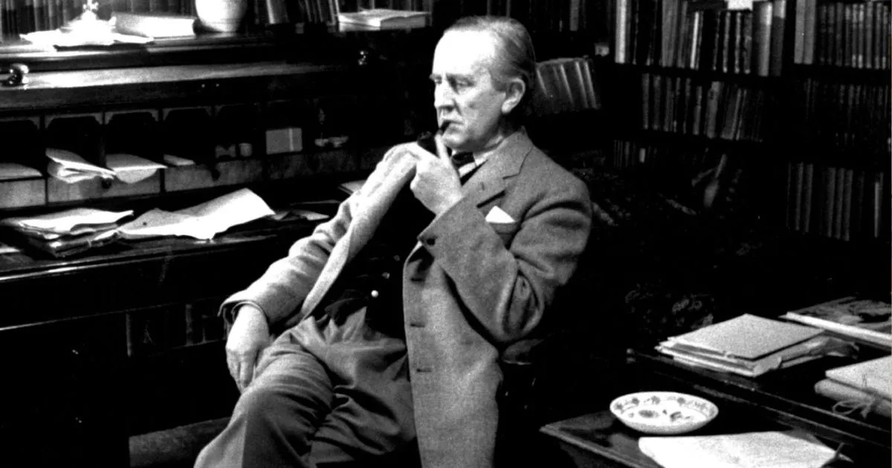

John Ronald Reuel Tolkien
“All we have to decide is what to do with the time that is given us.”

Professor Tolkien, in his library smoking his signature pipe
Here is a brief timeline of Professor Tolkien's life:
- 3 January 1892 - Birth of John Ronald Reuel Tolkien in Bloemfontein, Orange Free State (now part of South Africa).
- 21 January 1889 - Birth of Edith Mary Bratt, Tolkien’s future wife, in Gloucester.
- 1902 - The Tolkiens move to Edgbaston, Birmingham. The boys are enrolled at St Philip’s Grammar School, but later in the year Ronald is educated at home.
- Autumn Term 1907 - Tolkien probably invents his private language ‘Naffarin’ based on Spanish and Latin.
- 1908 - The boys move to Duchess Road and live with Mrs. Faulkner. Tolkien meets Edith Bratt, another lodger.
- 17 December 1910 - Tolkien obtains a scholarship at Oxford’s Exeter College.
- October 1911 - Tolkien begins studying at Oxford.
- 1913 - Tolkien writes to Edith on his 21st birthday, and soon after they become engaged
- 24 September 1914 Tolkien writes his first identifiable “Middle-earth” fragment ‘The Voyage of Éarendel the Evening Star’.
- 22 March 1916 Ronald and Edith are married in Warwick.
- 6 June 1916 - Tolkien travels to France. On the boat he writes the poem ‘The Lonely Isle’. Tolkien becomes a Battalion Signalling Officer.
- 9 November 1916 - Suffering from trench fever, Tolkien returns to England.
- Spring 1917 - ‘The Fall of Gondolin’ is probably written before June. He is posted to Yorkshire, but he suffers recurring bouts of illness.
- c. May 1917 - Tolkien is inspired by watching Edith dance in a ‘hemlock’ glade near Roos. This is the germ for the meeting of Lúthien and Beren in his legendarium.
- Summer 1930 - About this time, Tolkien may have written the first sentence of The Hobbit: “In a hole in the ground there lived a hobbit“.
- 21 September 1937 -The Hobbit is published. Because of its success, Stanley Unwin subsequently urges Tolkien to write a sequel, which he begins. This is the germ of The Lord of the Rings
- 29 July 1954 - Publication of The Fellowship of the Ring.
- 11 November 1954 - Publication of The Two Towers.
- 20 October 1955 - Publication of The Return of the King.
- 2 September 1973 - Death of J.R.R. Tolkien from a stomach ulcer.
- 15 September 1977 - Publication of The Silmarillion, edited by Christopher Tolkien